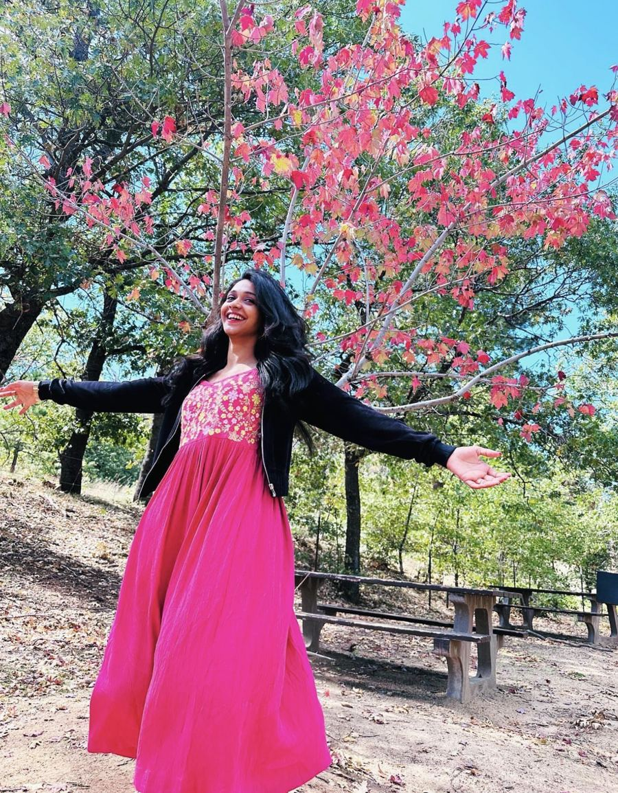
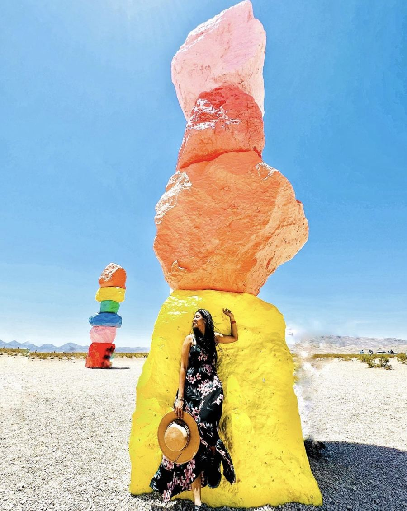
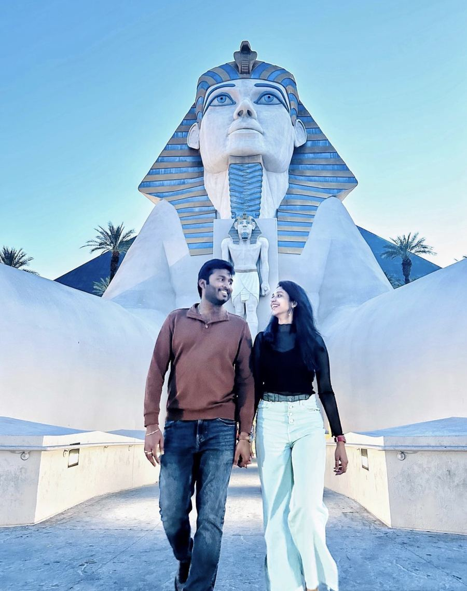
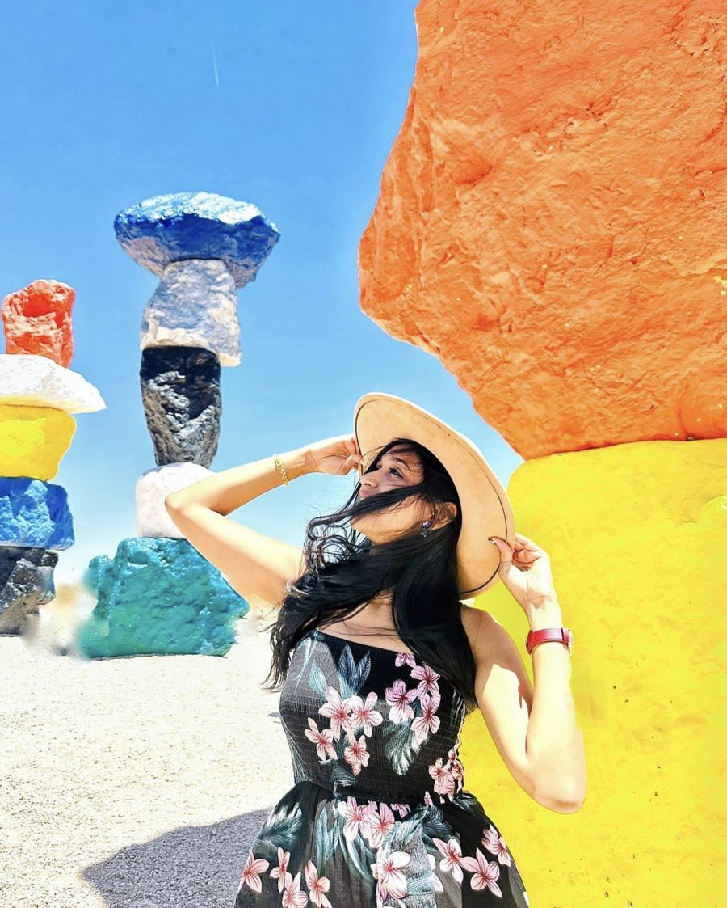
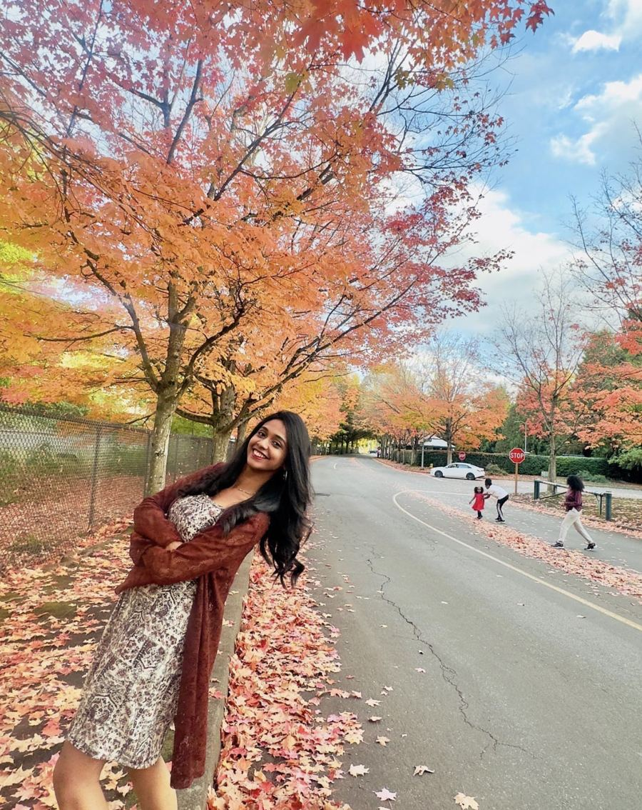
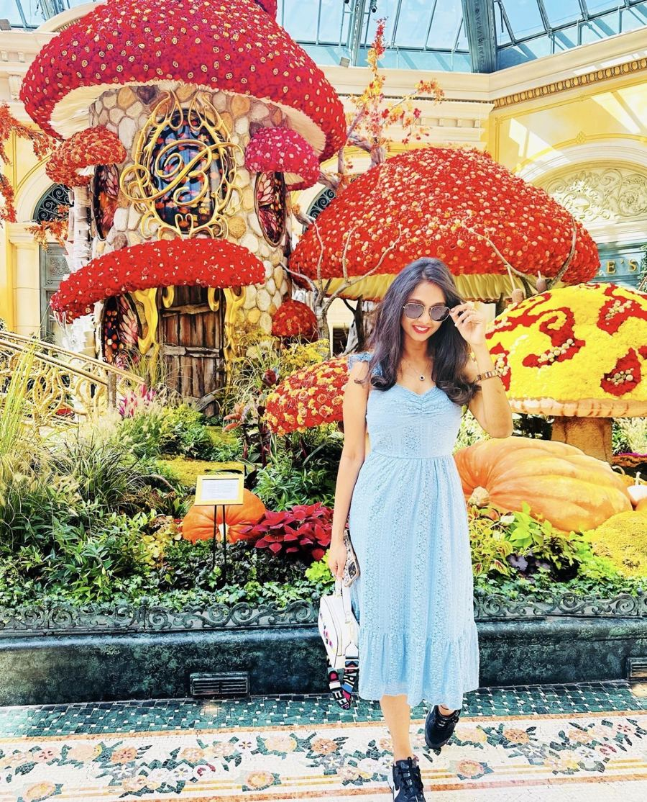
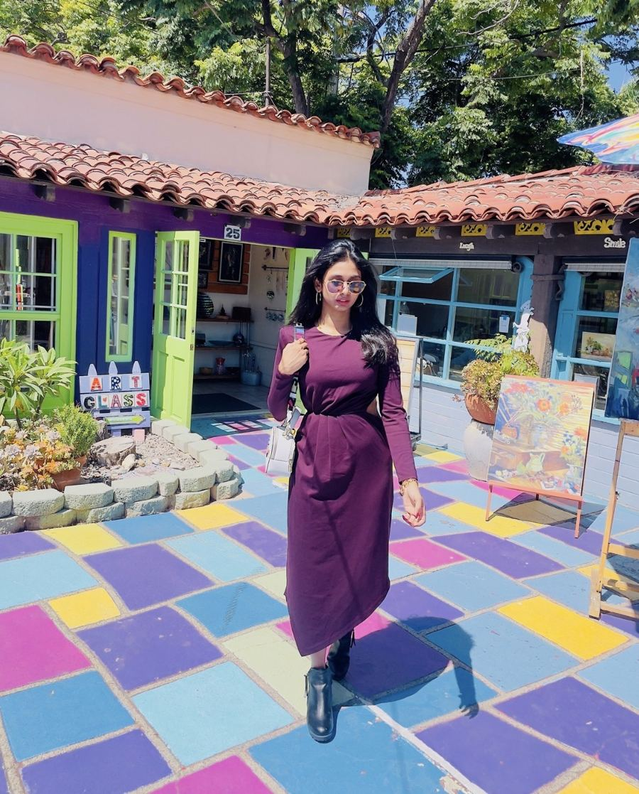
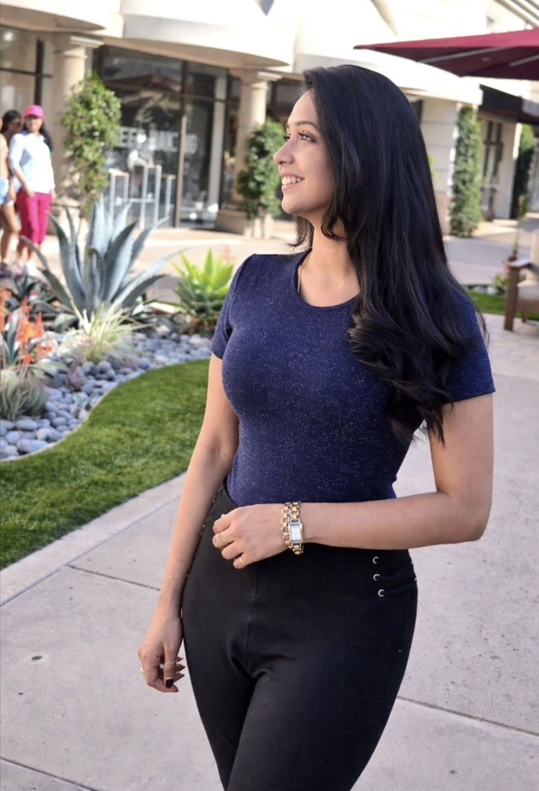

I combine more than ten years of SDET experience with hands-on photo and video editing—bringing test automation, engineering rigor, visual judgment and a strong understanding of creative workflows.
Engineering judgmentRisk-based coverage, evidence-driven triage, exploratory testing and release-quality thinking.
Portfolio
Selected work
Each item below identifies my editing contribution and the tool used. For externally hosted videos, the original footage/channel ownership is credited separately.
A selection of edited photos I've posted on Instagram.








Case Studies
Creativity Apps, tested through an SDET lens
The work below connects hands-on editing experience with the engineering questions I use to evaluate creative applications: functional correctness, media fidelity, workflow reliability, recovery, automation and cross-platform consistency.
01 · Production experience
HP Smart — image editing & scan quality
At HP, I tested customer-facing image and scanning workflows across mobile and desktop. My focus was not only whether an edit completed, but whether the resulting media stayed visually correct and usable from capture through export.
Edge detection, shadow removal, crop accuracy, orientation, resolution, visual consistency, export integrity and recovery from interruptions.
Automation
Python + PyTest and Appium for repeatable workflows, with OpenCV / histogram-based comparison used to help flag meaningful image-output differences for investigation.
Engineering mindset
Use automation for deterministic checks, then keep human visual judgment for subjective image quality, usability and final severity assessment.
Using my own editing workflow as a representative project, I approach video quality as an end-to-end pipeline rather than a playback-only check.
Import→Edit→Preview→Export→Validate
Timeline
Trim accuracy, transitions, mixed media, undo/redo and edit persistence.
Playback
A/V synchronization, smooth playback, dropped-frame symptoms and seeking behavior.
Output
Resolution, frame rate, orientation, duration, file integrity and preview-to-export consistency.
Long-run behavior
Responsiveness, memory growth, thermal impact and stability during longer editing/export sessions.
Portfolio scope: this is a demonstration of how I would structure quality coverage for an editing workflow; it is separate from the HP Smart production experience above.
Automation + SDET Engineering
Build repeatable coverage around real creative workflows.
My SDET approach starts with the user workflow, then chooses the right level of automation for UI behavior, media output, system integration and regression feedback. Performance is one signal within that broader quality strategy—not the sole focus.
Functional coverageProtect core editing flows
Import, edit, preview, undo/redo, save, reopen and export across positive, negative and interruption scenarios.
Media validationVerify the output, not only the UI
Python/PyTest for reusable validation, Swift/XCTest or XCUITest for Apple-platform workflows, Appium where cross-platform mobile coverage adds value, and OpenCV for programmatic visual checks.
CI + regressionFast, trustworthy feedback
Keep critical smoke and stable regression paths automated, isolate flaky failures, preserve useful logs and artifacts, and escalate customer-impacting regressions with evidence.
SDET workflow
Understand → automate → validate → triage
Model the user journeyStart from how a creator imports, edits, previews, saves and exports—not from isolated UI controls.
Choose high-value automationAutomate deterministic, repeatable scenarios and keep exploratory coverage for subjective visual and usability risks.
Validate beyond the screenConfirm the resulting file, media properties and persisted state so a passing UI action also produces a correct output.
Triage with evidenceUse logs, screenshots, output files, environment details and targeted metrics to separate product regressions from test or infrastructure failures.
I evaluate creative tools end to end—combining functional and regression coverage, visual fidelity, editing workflows, export validation, stability, targeted performance checks and repeatable automation.
Color and file formats
Check that colors stay consistent across color profiles like sRGB and Display P3, and that files open and export correctly in formats such as JPEG, PNG, HEIC and PSD.
Layers and undo
Stack many layers, masks and adjustments, then undo and redo in different orders to confirm nothing is lost or reordered.
Timeline and playback
Build long timelines with mixed frame rates and resolutions, and check smooth playback, accurate trims and audio-video sync.
Export quality
Compare exported video against the timeline for quality, length, sync and file size across presets.
Performance and stability
Time key actions on large projects and watch for slowdowns, memory growth and crashes during long sessions.
Automated checks
Automate stable, repeatable workflows and output checks in CI so functional and media regressions surface early, while reserving subjective visual decisions for human review.
About · San Diego, California
About me
I combine more than ten years of SDET experience with hands-on photo and video editing. That gives me two perspectives on creative software: the engineer who designs repeatable automated coverage and investigates regressions, and the user who notices visual quality, responsiveness and workflow friction.
My HP Smart experience included image-editing and scanning validation across customer workflows. I bring that same SDET mindset to Creativity Apps—balancing automation, functional and regression coverage, media integrity, performance awareness and exploratory testing while keeping the creator experience at the center.